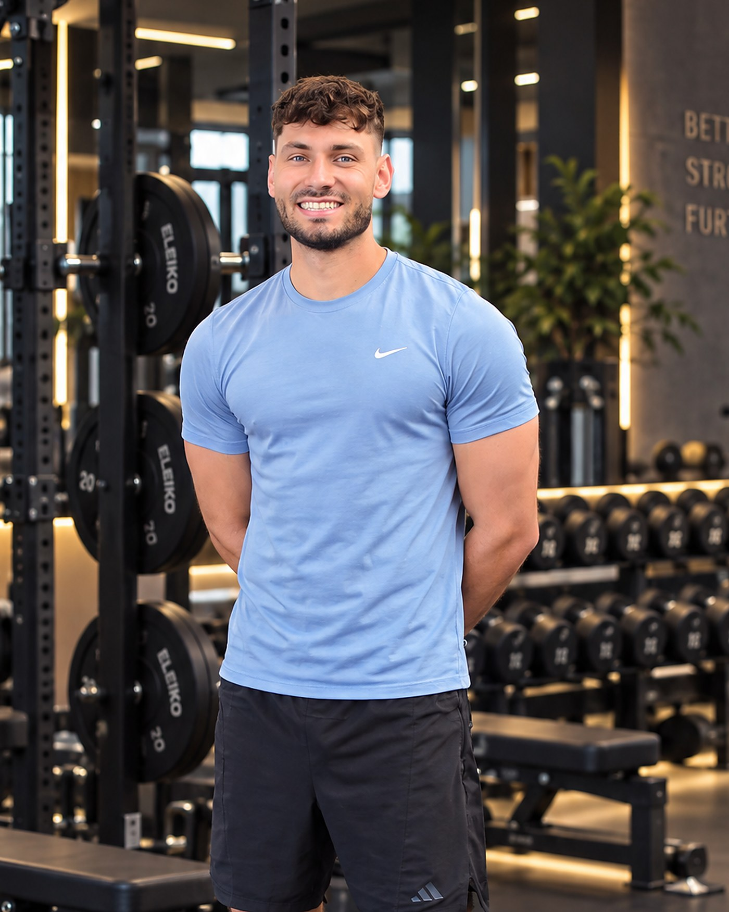
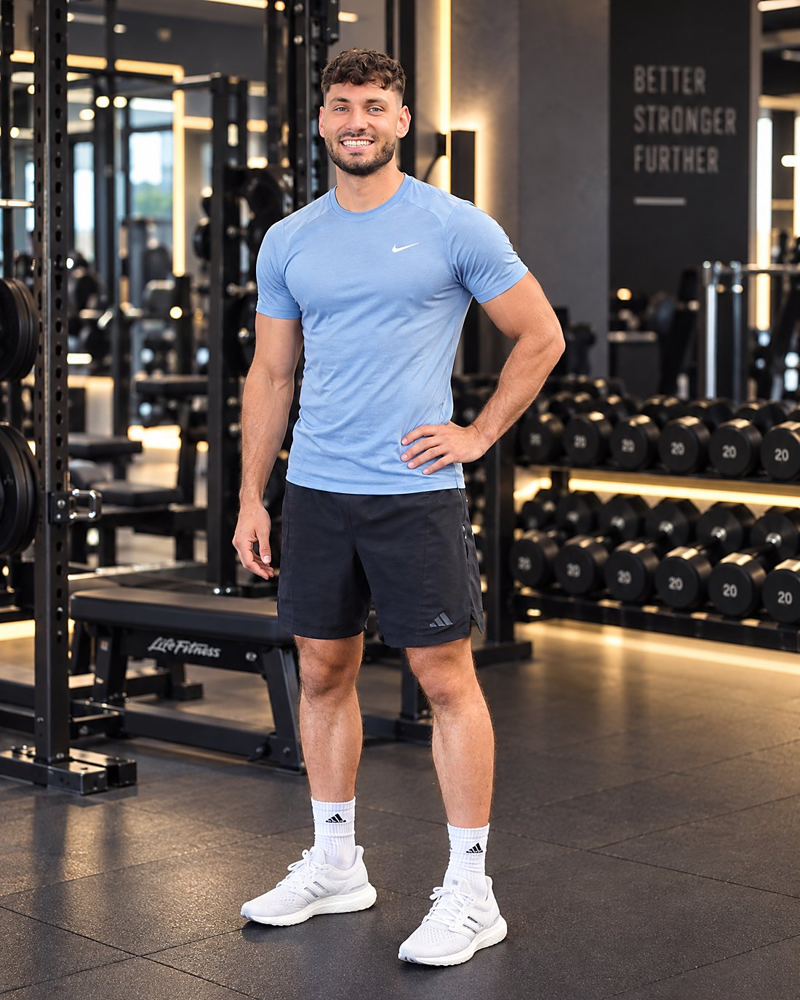

Fester 1:1 Live-Call
Jede Woche ein fester Termin mit mir. Wir besprechen die vergangenen Tage, analysieren Herausforderungen und Fortschritte und legen die nächsten Schritte fest.
Für vielbeschäftigte Menschen
Bereit, etwas zu verändern? Sehr gut. Denn gemeinsam bauen wir etwas auf, das auch in zwei Jahren noch steht — selbst in den Phasen, in denen alles drunter und drüber läuft.

Dabei helfe ich dir
Was du bekommst
Jede Woche ein fester Termin mit mir. Wir besprechen die vergangenen Tage, analysieren Herausforderungen und Fortschritte und legen die nächsten Schritte fest.
Zwischen den Calls bin ich ansprechbar. Spontane Geschäftsreise, Restaurantkarte, eine Frage, die nicht warten soll — schreib mir, du bekommst eine Antwort.
Keine Diät mit Enddatum, keine Verbotsliste. Ein System, das du verstehst und das mit Kantine, Kundenessen und Familie funktioniert.
Schritt für Schritt bauen wir Gewohnheiten auf, die sich irgendwann nicht mehr nach Disziplin anfühlen, sondern einfach dazugehören.
Wenn etwas klemmt, suchen wir die Ursache statt den Schuldigen. Und für Wochen, in denen nichts läuft, steht ein Minimum, das immer geht.
Wöchentliches Journaling und Fragebögen halten fest, wo du stehst. So siehst du Fortschritt auch dann, wenn es sich gerade nicht danach anfühlt.
Der Weg
Analyse statt Annahmen: Wo stehst du, wie sieht deine Woche wirklich aus, und woran ist es bisher gescheitert?
Wenige Gewohnheiten, dafür verlässlich. Erste Routinen, deine Mindeststandards und ein Ernährungssystem, das auch an vollen Tagen trägt.
Jetzt wird gesteigert. Im wöchentlichen Call lösen wir, was der Alltag dazwischenfunkt. Check-ins zeigen schwarz auf weiß, dass sich etwas bewegt.
Die Routinen tragen sich selbst. Wir arbeiten gezielt darauf hin, dass du irgendwann keinen Coach mehr brauchst.
Das Prinzip dahinter: In ein paar Monaten im Jahr kommt immer etwas dazwischen. Unsere festgelegten Mindeststandards sorgen dafür, dass deine Routinen auch dann am Leben bleiben — statt dass alles über Bord geht und du im Januar von vorn anfängst.
Kundenstimmen
„Heute — acht Monate später — bin ich 50 kg leichter und lebe ein komplett anderes Leben."★★★★★
„Ich habe meine Ernährung komplett umgestellt, Fett abgenommen, Muskeln aufgebaut und bin wieder richtig fit."★★★★★
„Eigentlich waren nur ein paar Monate geplant — es hat so viel Spaß gemacht, dass ich weitermachen wollte!"★★★★★
Was es kostet
Der Preis hängt vom Umfang ab, vom Zeitraum und davon, was du konkret brauchst. Eine Zahl, die hier pauschal stünde, wäre für die eine Hälfte zu hoch und für die andere zu niedrig.
Deshalb klären wir das im kostenlosen Erstgespräch: Wir legen gemeinsam den Rahmen fest, danach bekommst du eine klare Zahl — ohne Verkaufsdruck. Zahlbar als Gesamtbetrag oder in monatlichen Raten.

Der erste Schritt ist ein lockeres Gespräch, fünfzehn bis dreißig Minuten. Ohne Kosten, ohne Verpflichtung — nur die Frage, ob das Coaching das Richtige für dich ist. Und wenn es das aus meiner Sicht nicht ist, sage ich dir das offen.